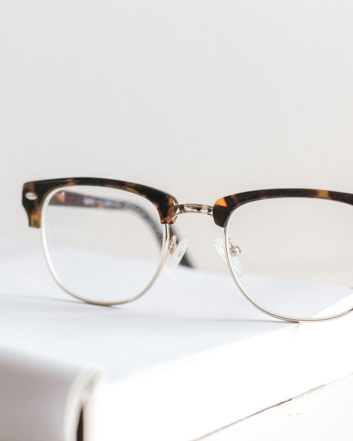
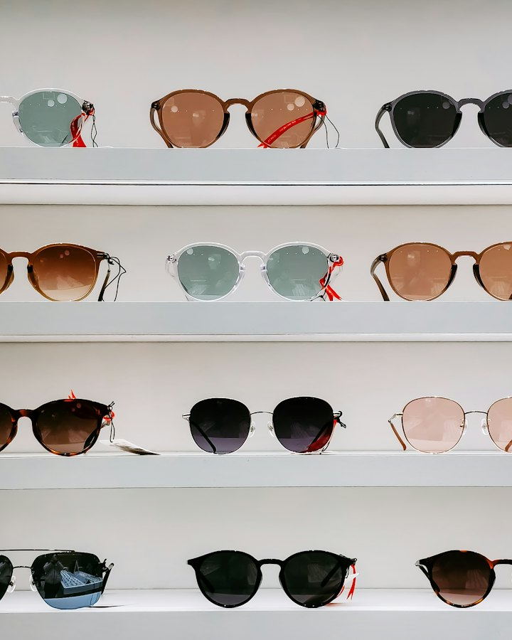
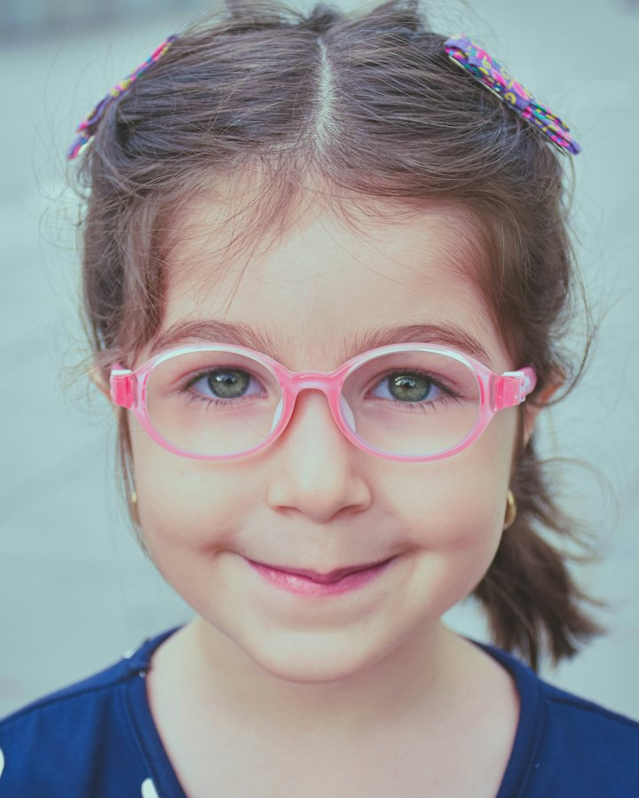
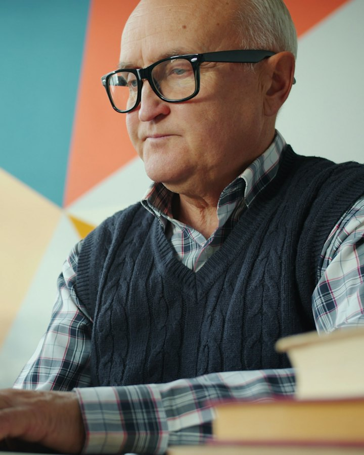
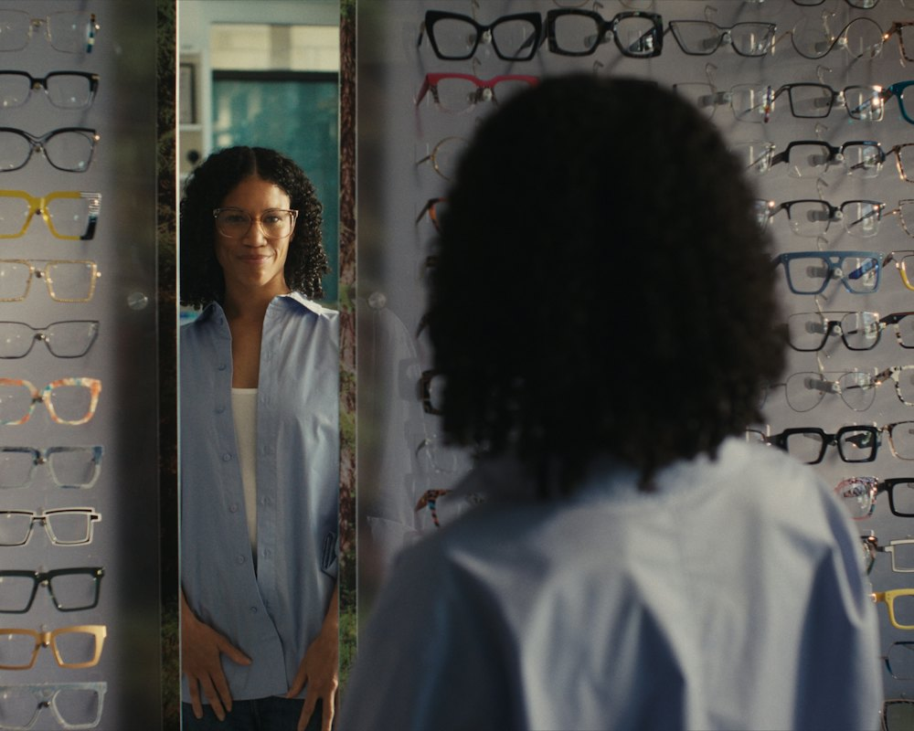

Optical store & eye clinic · Indiranagar
Frames that fit your face. Lenses that fit your day.
Try on 1,200 frames, have your eyes checked by a qualified optometrist and collect glasses cut in our own lens lab — all on the first floor of 612, 12th Main Road.
Eyewear collections
Four collections, each made for a different part of your day
Every collection is stocked in several sizes, so you judge fit on your own face — not on a screen.
-

Everyday Optical
Light acetate and metal frames that stay comfortable from the first meeting to the drive home.
-

Sun & Polarised
UV400 sunglasses, polarised driving pairs and any frame glazed with your prescription in a sun tint.
-

Kids & Teens
Flexible hinges, adjustable nose pads and impact-resistant lenses, sized for ages 3 to 15.
-

Screen & Office
Frames paired with office lenses that widen the computer zone for long desk days after 40.
Frame finder
Not sure what suits you? Start with your face shape
Pick the outline closest to yours. Our opticians follow one rule of thumb: contrast your features rather than repeat them.
Tip: pull your hair back and look straight into a mirror. Whichever is widest — forehead, cheekbones or jaw — decides your shape.
Oval face
Balanced proportions with a jaw slightly narrower than the forehead. Almost every shape works, so focus on scale.
- Try
- Browlines, wide rectangles and generous round frames
- Skip
- Very narrow frames that make the face look longer
Round face
Soft curves with similar width and length, widest at the cheeks. Angles add definition.
- Try
- Rectangles and geometric frames that sit slightly above the cheekbones
- Skip
- Small, perfectly round frames that echo the face
Square face
A strong jaw and broad forehead of similar width. Curves soften the angles.
- Try
- Round, panto and oval frames, or thin metal rims
- Skip
- Boxy, heavy rectangles that repeat the jawline
Heart face
A wider forehead tapering to a narrow chin. Keep the top of the frame light.
- Try
- Thin metal, rimless or ovals that are slightly wider at the bottom
- Skip
- Heavy browlines and decorated top rims
Diamond face
Cheekbones are the widest point, with a narrower forehead and jaw. Add width at the brow.
- Try
- Cat-eye, upswept and browline frames
- Skip
- Narrow frames that sit inside the cheekbones
Included with every pair
The price on the tag already covers what others charge extra for
-
Anti-glare and UV400 as standard
Every prescription lens we fit has a multi-layer anti-reflective coat and full UV protection at no extra cost.
-
Free adjustments for life
Walk in any time for re-alignment, new nose pads and an ultrasonic clean. No receipt or appointment needed.
-
Ready in three working days
Single-vision lenses are edged in our on-site lab. Progressives from ZEISS or Essilor take 7–10 days.
-
12-month breakage cover
Snapped a hinge or scratched a lens in the first year? We replace it once for a ₹500 handling fee.
-
30-day progressive promise
Can’t get used to your progressive lenses within 30 days? We remake them in a different design, free.
-
₹500 trade-in on old frames
Bring any old pair when you buy. We clean and re-glaze them for people who can’t afford glasses.

Free frame styling
Twenty minutes with an optician beats an hour of scrolling
Book a styling session and a dispensing optician will narrow the whole wall down to the few frames that suit your face, prescription and budget.
-
Tell us how you use your eyes
Screens, night driving, Sunday cricket — your routine decides the lens type and frame material.
-
Try a shortlist of eight
We pull frames that suit your lens power too: strong prescriptions look best in smaller, rounder shapes.
-
Compare side by side
Our mirror camera saves a photo of each frame on you, so you can decide at home or ask family on WhatsApp.
Sessions run Monday to Friday, 11 am – 4 pm. Mention “styling” when you message us.
Ask for a styling slotNeed a new prescription before you choose?
A standard eye test takes 20 minutes and costs ₹350 — refunded when you buy a complete pair within 30 days.